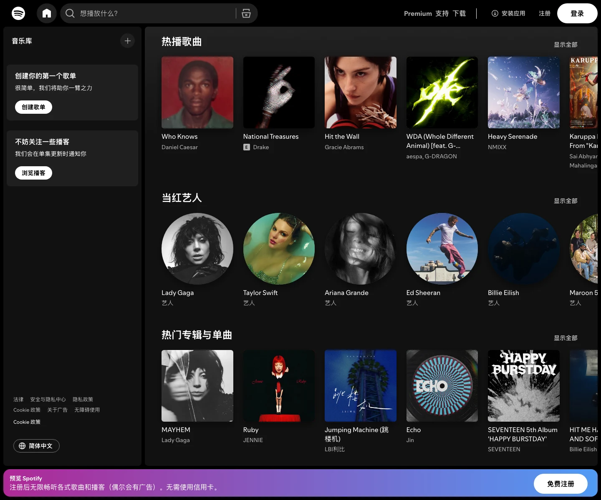

Spotify 主题
Spotify 的 Design.md 主题展示，围绕媒体内容、暗色界面、强视觉、消费品牌组织页面。
Music streaming. Vibrant green on dark, bold type, album-art-driven.
媒体内容暗色界面强视觉消费品牌电商零售品牌展示移动端内容货架趣味互动

来源
- 来源
- getdesign.md
- 镜像
- github:VoltAgent/awesome-design-md
- 网站
- https://spotify.com/
- 详情
- https://getdesign.md/spotify/design-md
色板
#1ed760: #1ed760#a0a0a0: #a0a0a0#000000: #000000#fbbf24: #fbbf24#8a8a8a: #8a8a8a#0a0a0a: #0a0a0a#e0e0e0: #e0e0e0#ffffff: #ffffff
字体
display: Helvetica Neuebody: Intermono: ui-monospacehints: Helvetica Neue,Inter,ui-monospace
圆角
control: 7pxcard: 7pxpreview: 7pxpill: 9999pxsource: design-md
间距
xxs: 1.4pxxs: 2pxsm: 24pxmd: 1.50remlg: 18pxxl: 1.13remxxl: 8pxxxxl: 16pxsection: 0pxsection-lg: 43pxhero: 4pxband: 36pxspace-13: 12pxspace-14: 96pxspace-15: 48pxspace-16: 9999pxsource: design-md
使用建议
建议
- 建议：Use near-black backgrounds ({#121212}–{#1f1f1f}) — depth through shade variation。
- 建议：Apply Spotify Green ({#1ed760}) only for play controls, active states, and primary CTAs。
- 建议：Use pill shape (500px–9999px) for all buttons — circular (50%) for play controls。
- 建议：Apply uppercase + wide letter-spacing (1.4px–2px) on button labels。
- 建议：Keep typography compact (10px–24px range) — this is an app, not a magazine。
避免
- 避免：use Spotify Green decoratively or on backgrounds — it's functional only。
- 避免：use light backgrounds for primary surfaces — the dark immersion is core。
- 避免：skip the pill/circle geometry on buttons — square buttons break the identity。
- 避免：use thin/subtle shadows — on dark backgrounds, shadows need to be heavy to be visible。
- 避免：add additional brand colors — green + achromatic grays is the complete palette。
查看 DESIGN.md